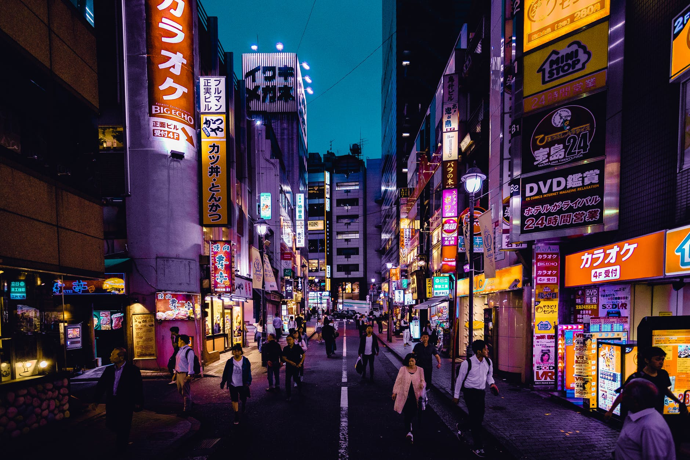
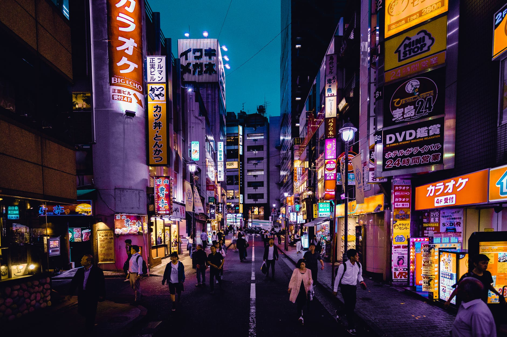

Developed by Adonay Douglas
Esse exemplo de darkmode utiliza localStorage do navegador, ou seja mesmo dando f5, ou trocando de pagina
o darkmode continua ativo.
A meta tag 'theme-color' nada mais e que a cor da barrinha que aparece na parte de cima dos dispositivos
mobile.
As cores da meta tag 'theme-color' podem ser alteradas por qualquer outra cor em darkmode.js
Sendo: clearcolor (A cor do modo Claro), darkcolor (A cor do modo Dark).
Enquanto no css a classe :root e responsavel pelas cores, fontes etc... do modo claro e a classe
.darkmode do modo escuro, como pode ver no arquivo style.css desse projeto.
 
